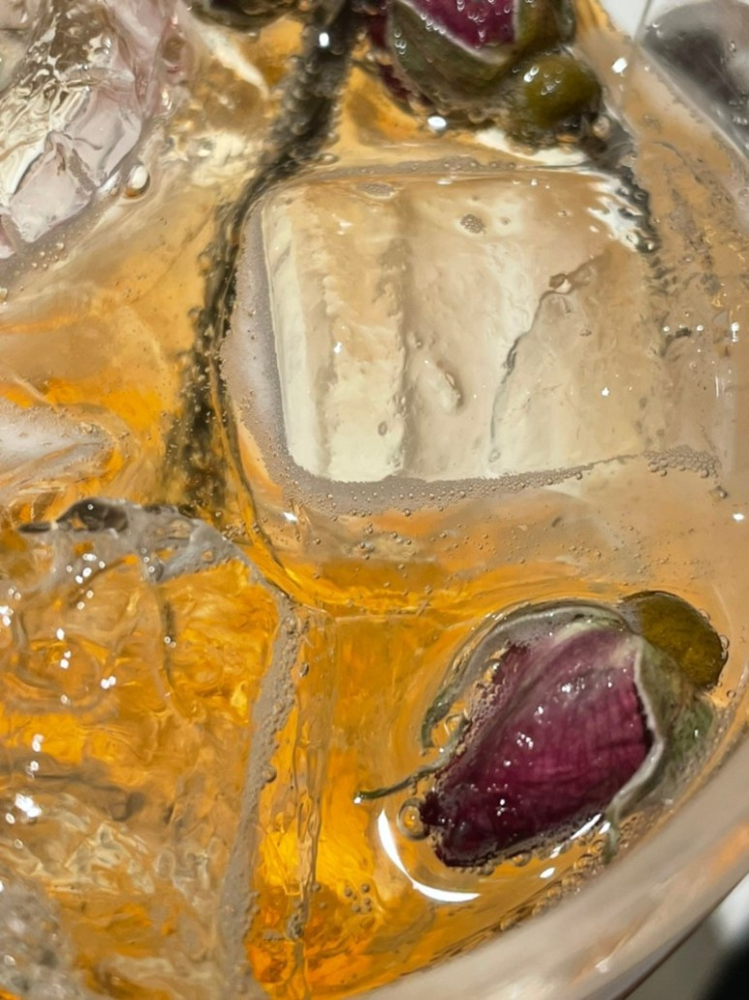

- 환상의 환상쇼
- 불면에게
- enough to fall in love
- 겆정티비

초여름 비가 안개처럼 내리는 9시 59분.
아무도 오지 않는 공원 한가운데 앉아있다.
나는 밖에서만 밥을 먹는 개를 키운다.
엄마와 나는 단 하루라도 산책을 잊은 적이 없다.
소형견보다 크고 대형견보다 작은, 8kg의 4살 짜리 개. 개는 젖은 바닥을 질주한다.
개구리가 벅적벅적 운다. 개는 정자 위로 올라와 꼼작 않는 나를 바라본다.
털달린 것들은 무엇도 슬프지 않다.